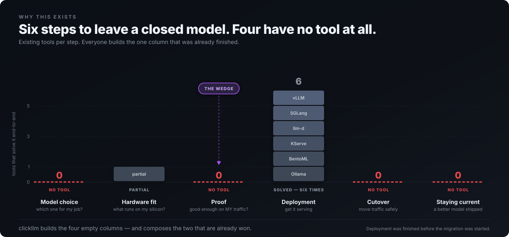
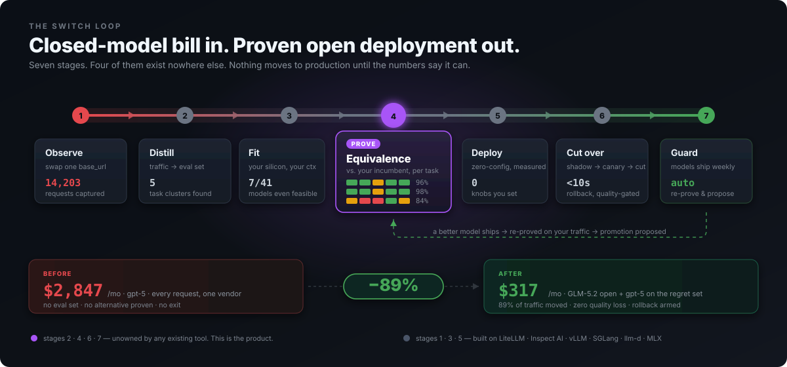

You don't have a model problem.
You have a proof problem.
GLM-5.2 is MIT-licensed, 11× cheaper, and probably good enough. "Probably" is why you're still paying $18K a month.
clickllm turns your production traffic into the benchmark that settles it — then moves you across with a quality gate and a rollback button.
Everyone already knows the answer.
Nobody can prove it.
Ask any staff engineer whether an open model could handle most of their traffic and they'll say yes. Ask them to bet the product on it and they'll stop — correctly. Nothing turns that instinct into evidence.
| What you'd need | Closest tool | Why it stops short |
|---|---|---|
| A benchmark of your workload | promptfoo, Inspect AI | Both start from a test set you hand-write. Yours doesn't exist. |
| A verdict you'd act on | LM Studio side-by-side | One prompt at a time, by hand, judged by eye. |
| Your traffic, analysed | LiteLLM | Proxies every request you make. Does nothing with them. |
| A safe cutover | Any gateway | Canaries on errors. Not one gates on quality. |
| To stay current | — | You find out on Twitter, then redo the work by hand. |

Seven stages. One command.
Each stage is an agent with tools — resumable, and able to skip ahead when the
answer is already known. clickllm switch drives all seven and asks only when it
genuinely can't decide.

① Observe
Swap one base_url. Traffic is captured and PII redacted before it touches disk. Useful on day one as a cost ledger.
② Distill
Cluster by task shape, not semantics — same system prompt, same tools, same output format is the same job. Deterministic, so the eval set reproduces.
③ Fit
What runs on your silicon at the context and concurrency you actually use. MoE, GQA and MLA-correct.
④ Prove
Assertions → task graders → position-swapped judge, scored against your incumbent's real answers, per cluster.
⑤ Deploy
Zero-config. Every knob derived, benchmarked, and reverted if it doesn't help on your hardware.
⑥ Cut over
Shadow → canary → cut, gated on quality. Auto-rollback under 10 seconds. Shadow traffic is genuinely dispatched, never simulated.
The output is a decision,
not a dashboard.
One table your CTO can read in ten seconds, and an engineer can drill into for an hour.
codegen tools long-ctx summar. classify ~cost (38%) (24%) (11%) (19%) (8%) ────────────────────────────────────────────────────────────────────────── GLM-5.2 Q4 96 ██ 91 ██ 62 ▓▒ 99 ██ 100 ██ $210/mo Kimi-K2.7-Code 98 ██ 94 ██ 71 ▓█ 95 ██ 100 ██ $180/mo Qwen3.6-27B Q8 84 ▓█ 79 ▓█ 55 ▒░ 97 ██ 100 ██ $140/mo ────────────────────────────────────────────────────────────────────────── gpt-5 (incumbent) 100 100 100 100 100 $2,847/mo ▸ REGRET: long-context multi-file refactor (11% of traffic) Every candidate degrades past 18K context. Keep gpt-5 for this cluster. Hybrid saves $2,530/mo (89%) at zero quality loss. judge: claude-opus-5, position-swapped · human agreement 0.89 (n=40)
Traffic-weighted
A cluster that's 38% of your load counts five times one at 8%. Unweighted matrices flatter the wrong models.
Incumbent pinned at 100
Nobody cares about absolute quality. They care whether switching is a downgrade.
Regret above the fold
Where open loses is printed first. The honest failure is what makes the wins credible — and it's what a vendor comparison will never show you.

Every channel you already use.
# nothing to install — runs straight from the index
uvx clickllm fit --context 32k --concurrency 8brew install dshakes/tap/clickllm
pipx install clickllm
docker run --rm ghcr.io/dshakes/clickllm:latest fit --json docker run --rm --gpus all ghcr.io/dshakes/clickllm:latest fit
git clone https://github.com/dshakes/clickllm && cd clickllm
uv run --python 3.13 python -m clickllm.cli fit
cargo test --all # 110 Rust testsM4 Max · 16 cores · 128 GB · 546 GB/s usable for inference: 96 GB raise to ~118 GB with: sudo sysctl iogpu.wired_limit_mb=120586 FEASIBLE at 32,768 context, concurrency 8 model quant weights kv total free ~tok/s license ---------------------------------------------------------------------------------- Qwen3 32B q4 17.2G 64.0G 84.1G 11.9G 21 Apache-2.0 Qwen3 30B-A3B (MoE) q8 28.4G 24.0G 56.2G 39.8G 119 Apache-2.0 Phi-4 14B q8 13.7G 50.0G 66.3G 29.7G 27 MIT NOT FEASIBLE Kimi K3 (2.8T MoE) weights alone need 1,467 GB at q4 — MoE sparsity (50B of 2800B active) cuts compute, not memory runtime -> vllm-mlx continuous batching on Metal; at concurrency 8 aggregate throughput dominates, despite ~15% lower single-stream than llama.cpp
Every number answers --explain, which prints
the arithmetic that produced it. A recommendation you can't audit won't be trusted with production.
Pre-alpha, built in the open.
This page describes the target. Here is what actually runs today — stated plainly, because a roadmap dressed as a changelog is the fastest way to lose an engineer.
Running today
MoE/GQA/MLA-correct sizing, runtime recommendation, --explain.
Refuses before bytes move. Unknown licences fail closed.
SSE passthrough, in-flight token metering, migration router, real shadow dispatch.
CLI · MCP server · Python SDK · agent skill · local console.
110 Rust, 36 Python. Clippy -D warnings clean.
Not built yet
Capture and redaction.
Clustering and sampling land first — in progress.
The grader stack. The milestone the thesis rests on.
Drift watch and promotion proposals.
Full acceptance criteria and risk gates in the implementation plan.
The risk we're most likely to get wrong
Grader quality is the product. A wrong equivalence verdict breaks a customer's production system. Mitigations are designed in — three-tier grading, position-swap debiasing, published judge–human agreement, and shadow mode as the real gate before any traffic moves. If stage ④ can't produce verdicts people trust, there is no product, and we'd rather find that out in month four than month twenty-four.
Built on a thesis, not a hunch.
Fourteen competing products were researched across four layers before a line was written. The conclusion: almost everything here already exists and is good — deployment is solved six times over — and the migration itself is unowned. Every load-bearing decision, including the two that reversed earlier ones, is recorded as an ADR.
Apache-2.0
A product about escaping lock-in cannot create lock-in. Eval sets export; generated config runs standalone.
Local-first
Zero telemetry. Nothing leaves your machine without an explicit command. Runs fully air-gapped.
Auditable
--explain on every number. Judge model and human-agreement rate disclosed in every report.